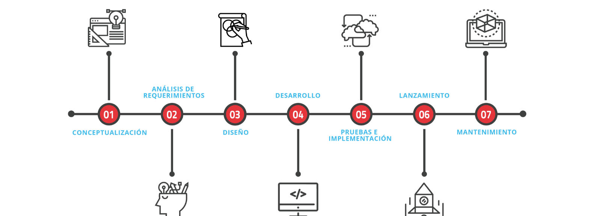

Trabajamos en desarrollo de productos o en proyectos para la obtención de aplicaciones a medida de las necesidades de nuestros clientes, aplicando los procedimientos y controles de nuestro sistema de gestión de la Calidad. Buscamos utilidad y eficacia a la hora de garantizar perfectos resultados.
NUESTRO SERVICIO DE CREACIÒN DE SISTEMAS
Desarrollamos aplicaciones informáticas que trabajen para tus necesidades en aquellos casos en los que éstas no están recogidas por software estándar, o no lo están de una forma eficiente.
- Desarrollo Informatico
- Diseño de Base de datos
- Mantenimiento
- Otros
NUESTRO PROCESO

Que Tecnologías Usamos
- JAVA
- JAVA FX
- C#
- MySql
- SQL Server